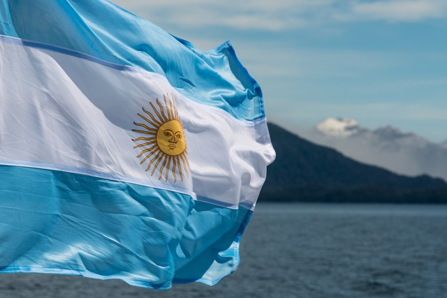

About Me
"Hello! I'm Mauro, a passionate enthusiast of sports and adventure. I love immersing myself in the world of football and other sports, where competition and camaraderie come together in thrilling gameplay. Besides, I enjoy exploring nature, whether it's taking long walks to breathe in fresh air or capturing special moments through my lens as I delve into photography. I'm always on the lookout for new ways to stay active and discover the beauty of the world around us. Nice to meet you!"
Rosario, Argentina
Argentina is a nation passionate about soccer, where the sport is more than just a game; it's an integral part of the culture. With a rich soccer history, the country has produced some of the world's most legendary players and iconic teams. On Sundays, stadiums fill with fervent fans passionately cheering for their local teams. Additionally, the Argentine national team inspires unwavering loyalty nationwide, with their matches being events followed with devotion and overflowing emotion.